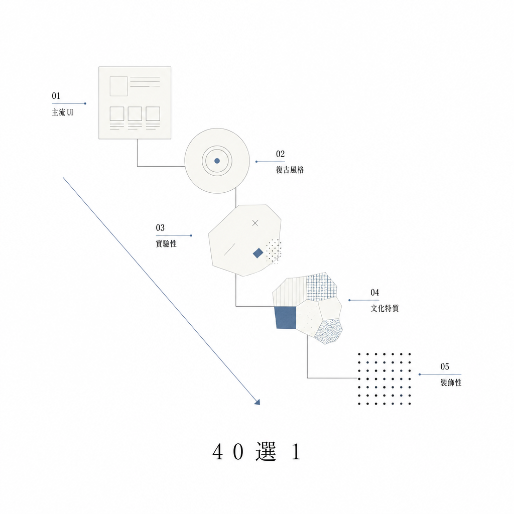

主流 UIC01
玻璃擬態
Glassmorphism
半透玻璃面、背景模糊（backdrop-filter）與微光暈，呈現空間層次感。
📄 子頁待開
一份精選 40 種設計風格的視覺收錄。
25 種視覺流派 + 15 種動態效果，依用途分章，可組合運用於跨事業體的視覺決策。

半透玻璃面、背景模糊（backdrop-filter）與微光暈，呈現空間層次感。
同色系柔陰影與微凸介面，模擬實體物件的觸感與雕塑感。
動態色彩、明確層階與圓角元件的系統化設計語彙，當代產品學院派。
大量留白、單色字體與精確比例的排版美學，藝廊式靜謐視覺。
深色基底配低彩度發光點，營造劇場聚光燈式的沉浸氛圍。
紫粉漸層、希臘雕像與日文符號的 1990s 網際網路懷舊美學。
銀色金屬、半透塑膠與星型裝飾元素的 2000 年初千禧美學。
系統字體、tile 平鋪背景與灰色按鈕的早期 1990s 網頁風格。
網點質感、油墨偏色與粗襯線標題的 1970s 印刷海報風。
霓虹線條、紫紅落日與透視格線的 1980s 數位美學。
紅黃藍三原色配圓三角方塊的幾何構成，1920s 德國學院派。
裸露結構、強烈對比與粗暴排版的反 UX 設計哲學。
RGB 錯位、掃描線與隨機破碎的數位失真美學。
霓虹粉藍配黑底、片假名與發光邊框的高科技反烏托邦視覺。
紅黑斜切構圖與宣傳海報語法的俄式前衛排版。
綠底螢光字、ASCII art 與 80×24 終端機網格的純文字美學。
12 欄網格、粗襯線標題與圖文混排的傳統雜誌排版邏輯。
米色紙質、墨筆觸與不完美留白的日式侘寂美學。
硃紅墨黑、宋體字配水墨點綴的中式古典與當代潮流融合。
木質暖灰、無襯線清爽字體與北歐插畫的自然森林感。
左對齊網格、Helvetica 與紅色強調的二戰後理性排版革命。
霓虹招牌、紅黃對比與民俗符號的台灣在地熱鬧視覺。
30 度斜角立體插畫、玩具世界與小人物構圖。
蠟筆、歪斜手寫字與隨意箭頭的人工速寫感。
流動曲線漸層、極光色彩與柔光球體的液態畫布。
滾動時多層元素以不同速度位移，呈現縱深感。
章節先被釘住、再被下一章從底部疊上的堆疊滾動模式。
垂直滾動轉換為內容區段的橫向滑動位移。
每個區段佔滿視窗、scroll-snap 強制吸附的章節切換。
頂部 progress bar 與側邊章節點陣指示當前閱讀位置。
大字橫向跑動、速度依滾動而調變的 marquee 效果。
卡片進入視窗時依序錯落淡入位移的波浪入場。
Hero 標題以打字機節奏一字一字浮現，段落隨之滑入。
數字在滾入視窗時從 0 動畫跳動至目標值。
多色 radial-gradient 球體以長 loop 緩慢流動。
背景幾何形體上下漂浮、速度時快時慢的呼吸感。
動態膠片顆粒疊加緩慢色相旋轉的舊膠卷質感。
光暈隨滑鼠位置移動的局部 radial-gradient 照明。
卡片依滑鼠位置 3D 傾斜的 perspective 觸感互動。
按鈕在滑鼠靠近時被輕微吸過去的磁吸物件效果。